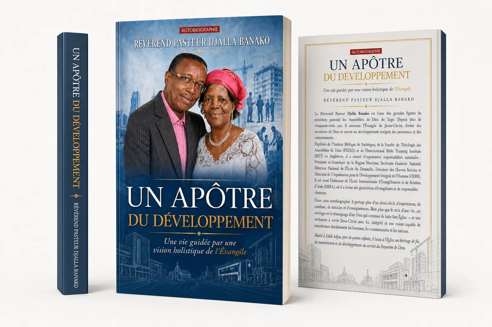

Réalisation · Design éditorial
Un apôtre du développement
Le projet
Donner une forme éditoriale à une vie de foi et de transmission.
Pour la publication de son autobiographie, le Révérend Pasteur Djalla Banako souhaitait une identité visuelle capable de traduire plus de cinquante années d’engagement pastoral et social.
La direction créative
La foi rencontre le développement humain.
L’architecture, les chantiers, l’église et les scènes de transmission composent un paysage symbolique tourné vers la transformation des communautés. Le bleu profond installe une présence institutionnelle et intemporelle, tandis que l’or souligne l’héritage et la dignité du récit.

De la création au livre
Une identité pensée pour devenir un objet imprimé.
La couverture a été préparée dans son format complet — quatrième, dos et première — puis déclinée pour accompagner la présentation et la sortie de l’ouvrage.
Voir la couverture d’impression PDF · document complet ↗Aperçu du livre · juillet 2026
Votre prochain projet